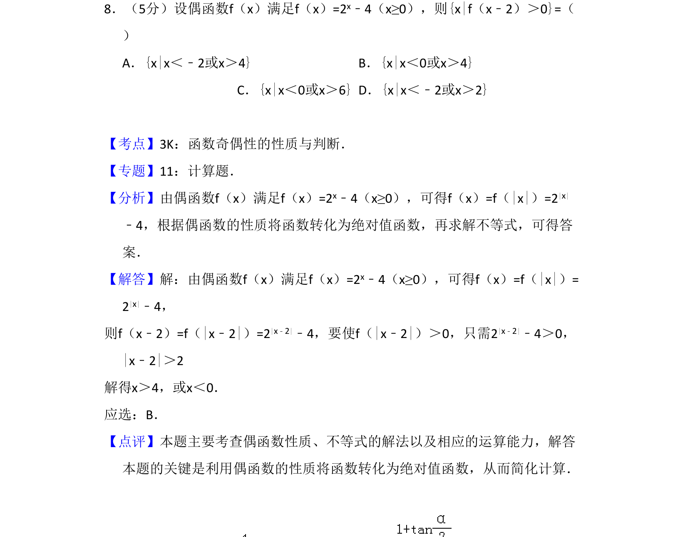
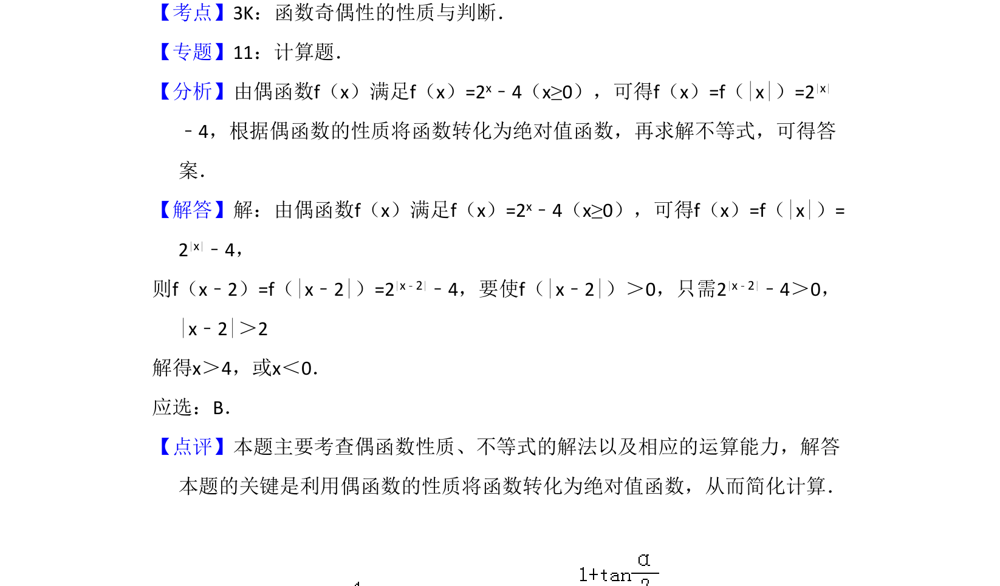

考点：函数奇偶性 绝对值函数 解不等式

本题利用偶函数性质将分段函数转化为绝对值函数，并求解绝对值不等式。

📄 原 PDF 第 6 页：
素材/真题/吉林/2008-2024·（吉林）数学高考真题/2010年高考数学试卷（理）（新课标）（解析卷）.pdf
8．（5分）设偶函数f（x）满足f（x）=2x﹣4（x≥0），则{x|f（x﹣2）＞0}=（ ） A．{x|x＜﹣2或x＞4}B．{x|x＜0或x＞4} C．{x|x＜0或x＞6}D．{x|x＜﹣2或x＞2}
【考点】3K：函数奇偶性的性质与判断．菁优网版权所有 【专题】11：计算题． 【分析】由偶函数f（x）满足f（x）=2x﹣4（x≥0），可得f（x）=f（|x|）=2|x| ﹣4，根据偶函数的性质将函数转化为绝对值函数，再求解不等式，可得答 案． 【解答】解：由偶函数f（x）满足f（x）=2x﹣4（x≥0），可得f（x）=f（|x|）= 2|x|﹣4， 则f（x﹣2）=f（|x﹣2|）=2|x﹣2|﹣4，要使f（|x﹣2|）＞0，只需2|x﹣2|﹣4＞0， |x﹣2|＞2 解得x＞4，或x＜0． 应选：B． 【点评】本题主要考查偶函数性质、不等式的解法以及相应的运算能力，解答 本题的关键是利用偶函数的性质将函数转化为绝对值函数，从而简化计算．